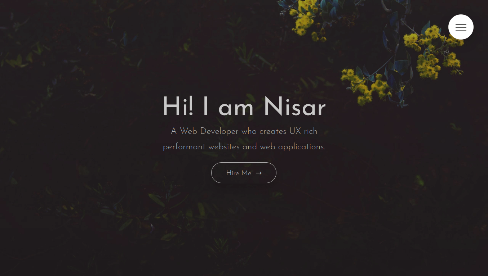
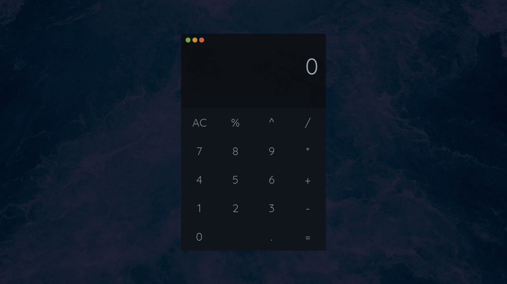
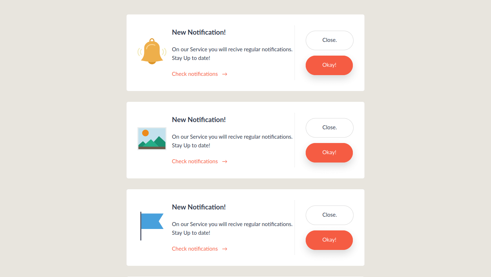

Featured Projects
NYC Traffic Collision Analytics
Analyzed 500,000+ vehicle collision records using Python and Tableau to identify high-risk periods, collision hotspots, and infrastructure conditions. Proposed three targeted safety interventions supporting a 15% collision reduction objective.
- Python
- Tableau
- Data Analysis
- Data Visualization


JPMorgan Chase Customer Complaint Analysis
Cleaned and standardized 50,000 consumer complaints across 3,933 banks using Excel Power Query. Applied Python sentiment analysis and logistic regression to investigate factors associated with consumer dispute likelihood.
- Excel
- Power Query
- Python
- Logistic Regression

Walmart Retail Sales Analytics
In Progress — Exploring retail sales performance, seasonal demand patterns, and store-level trends using SQL, Python, and Power BI.
- SQL
- Python
- Power BI
- In Progress

Professional Experience
Workiva
Incoming Data Research & Collection Intern
January 2027 – May 2027 | Remote
Incoming intern focused on regulatory intelligence, financial data analysis, and ESMA/ESEF disclosure research.
GRAMMY Media
Product Operations and Customer Insights Intern
May 2026 – August 2026
Analyzed 10,000+ user interactions using Google Analytics and Excel, contributing to an 18% increase in click-through rate. Built analytical reports and Power BI dashboards to support engagement decisions.
The Efficiency Network
Operations Analyst Intern
December 2025 – May 2026
Conducted cost-benefit and feasibility analyses for $10M+ data center investments across six regions. Developed SQL and Excel financial models and supported operational planning improvements.
Quantitative Reasoning Center
Quantitative Reasoning Associate
September 2025 – May 2026
Analyzed tutoring demand patterns to recommend staffing improvements and developed technical troubleshooting resources using Excel, R, Python, and Stata.
About Me
Hi! I'm Teresa (Tuyen) Nguyen, a Data Analytics and Quantitative Economics student at Dickinson College, graduating in May 2028. I enjoy using data to understand business challenges, identify patterns, and develop actionable recommendations. Through my experience at GRAMMY Media and The Efficiency Network, I've worked with SQL, Excel, Power BI, and Google Analytics to analyze business performance and improve operational processes. My interests include business analytics, operations, supply chain, financial analysis, and strategy.
View My Resume